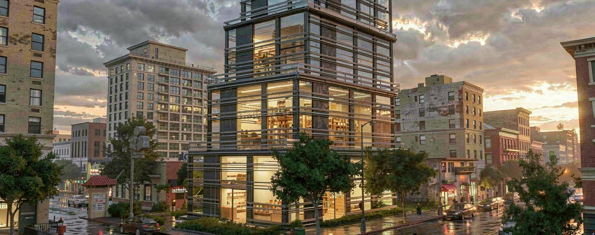
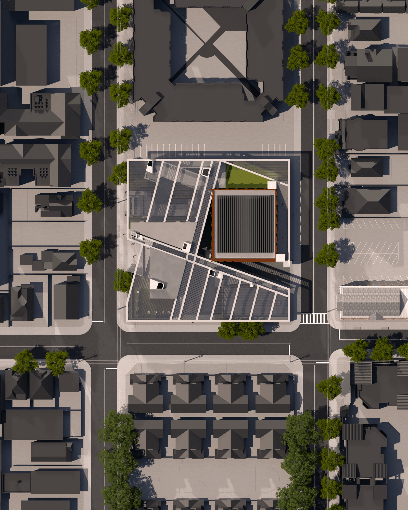
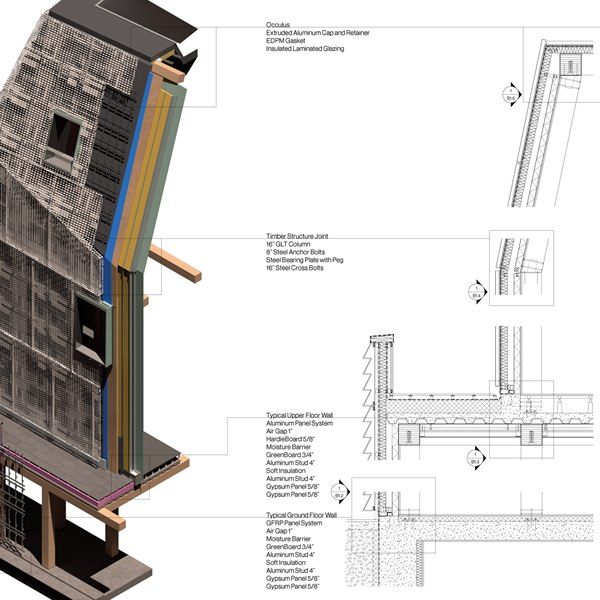
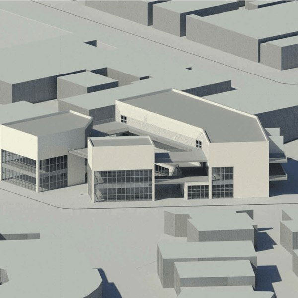
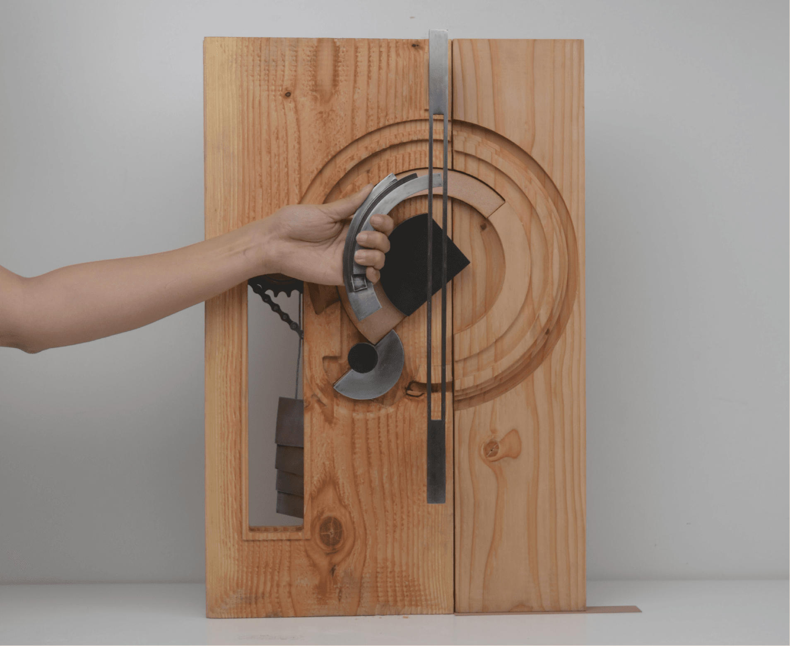

Designer specializing in the intersection of AI, automation, and architecture.
I build custom generative pipelines using Python, Grasshopper, and ComfyUI to solve complex spatial problems — streamlining 3D workflows through data-driven procedural modeling and advanced digital fabrication.
Download portfolio (PDF, 11 MB)
Prototype Interface Architecture
Interface Architecture
Interface Architecture
Interface Architecture


 Performing Arts Theater in Little Tokyo
Performing Arts Theater in Little Tokyo
FA23
Performing Arts Theater in Little Tokyo
Performing Arts Theater in Little Tokyo
FA23


 A Municipal Building in Van Nuys
A Municipal Building in Van Nuys

LA Dance Shed Casa Musica
Casa Musica
FA24
Casa Musica
Casa Musica
FA24



Design Documents
Advanced Project Delivery
Details, Details